矢平山
| 日付 | 2010年11月3日（水） |
|---|---|
| 山域 | 道志山塊 |
| メンバー | グループ（男4女6） |
| 山行形態 | 日帰り |
| アクセス | 電車、バス |
| ルート (Map) | 四方津駅→矢平山→下尾崎 |
中央線沿線にある高柄山に登る企画があり、行ってみることにする。
8:21 四方津駅到着。標高235m。
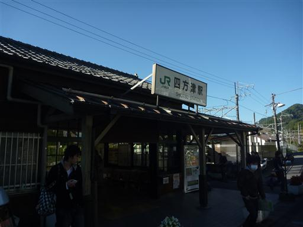
この山の木々は青々としている。落葉樹は少ないのかもしれない。
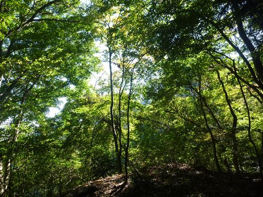
展望が開けたところで、富士山の頭が遠くに見える。山頂部が若干冠雪している。
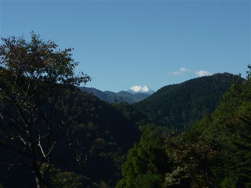
造りかけの林道。2年前に高柄山に来た時もこの道を通っているが、
その時よりも林道は伸びている。工事は進んでいるようだ。
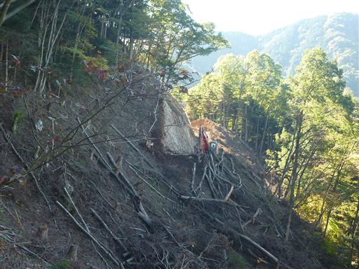
形のいい倉岳山が目立っている。その右にあるのは三ツ峠山あたりだろうか？
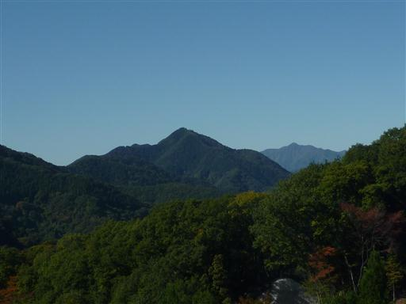
さらに遠くの方には雪をかぶった山脈もかすかに見える。南アルプスのようだ。
高柄山に行く予定だったが、思ったより時間がかかるということで今回はキャンセルする。
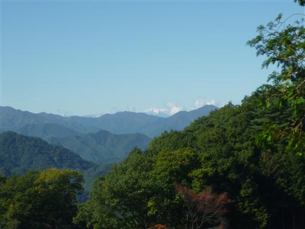
稜線から少し外れたところにある甚之函山という小ピークに登ってみる。
展望の開けない小さな山頂に、小さな山頂標識が立っている。
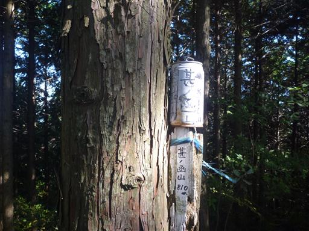
11:44 矢平山山頂到着。標高860m。
この山頂も展望は開けない。ここで大休止して昼食をとる。
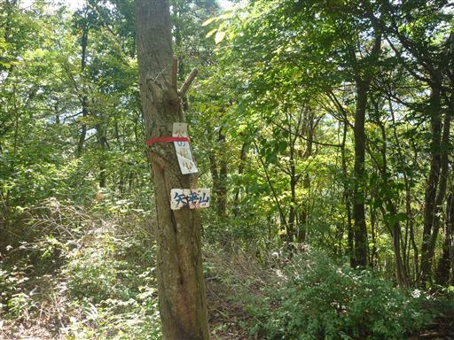
この季節は目立った花は咲いていないが、キク科の花が少し咲いている。
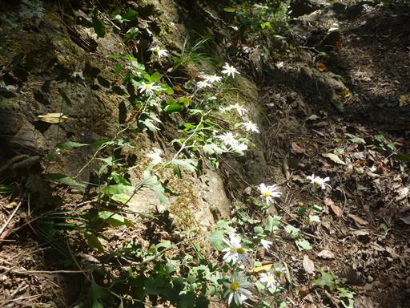
明るい広葉樹林の中を下っていく。
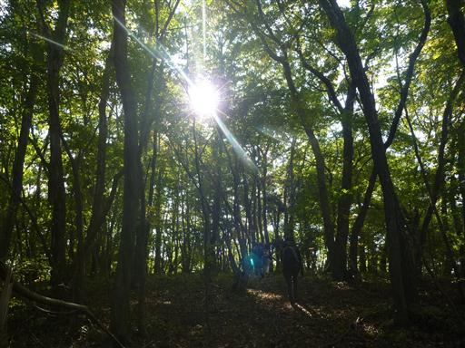
14:23 下尾崎バス停到着。標高450m。
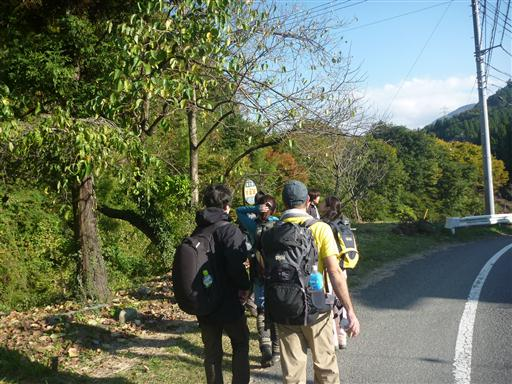
バス停そばの木を見上げると、何やらおいしそうな果実がなっている。
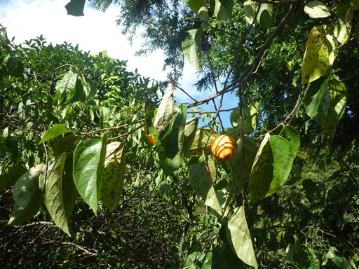
山間部にある秋山温泉に寄る。アクセスが不便なところにあるが、かなり賑わっている。
高柄山には登れなかったが、軽い運動ができた山行だった。
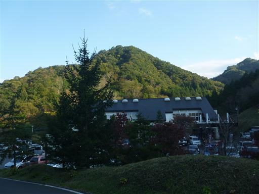